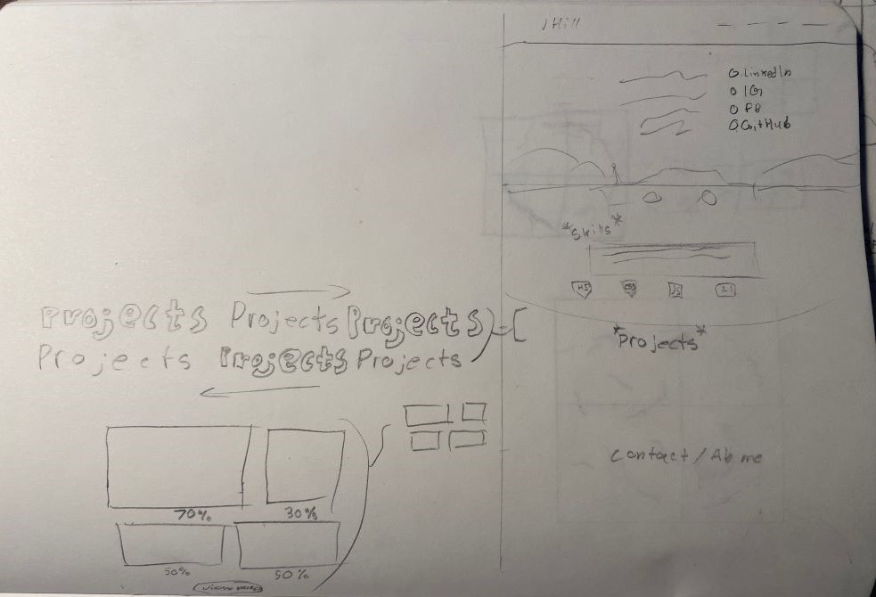

You're Lookin' At It 😎
This is my current portfolio; where I display my work and skills as a current front-end web developer.
On this page, not only will I display my work here; but also describe my thought process behind the work on my projects.
With that being said; let's look at how this page came to be:
This is an image of what I initially sketched out. I figured it's what got me to be where I am today and thought it would be good to tell my story of who I am; but after looking at YouTube videos of people critiquing other portfolios and seeing basic videos of what should go on your portfolio, I figured it was sharing too much about me so thought that it's something that I could put on my About page.
It does have some things that you do see on the homepage right now. And the sketch shows the work I wanted to put in for the navigation bar. I wanted it to be something that people can admire for the way it's animated and the fact that it's such a small detail; just like how I went through making a little background for when you hover over the "J Hill" "logo".
After Watching videos and thinking about a creative design, I came up with an idea, sketched it out, and aked ChatGPT what else goes in a portfolio.
You can see here, how I was trying to go for more of a pixelated look, with a beginning screen of all the links floating around infront of a hero that I would've created.
The story behind this is that I wanted it to look like building blocks and really acknowledge how the evolution of pixels keeps getting smaller and smaller. You can also see the first five things that ChatGPT told me to have.
After I got the basic layout built in the webpage, I didn't understand what I was thinking for having the nav links not only be shown twice in the same screen, but also the fact that it's the first thing you see and that it takes up the whole screen; so in other words, I thought it was a dumb design flaw that I didn't realize till I actually built it out.
After thinking about another design, it wasn't long for me to go back to the design I was using before but tweak it a little and sort of encorperate both designs together.
